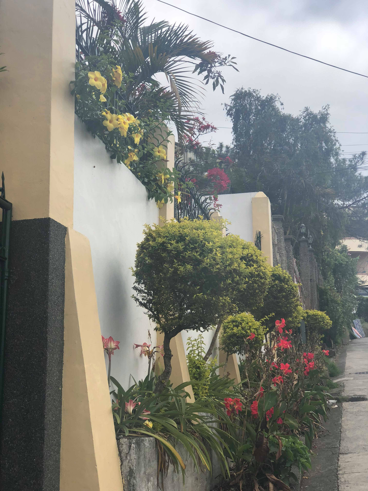
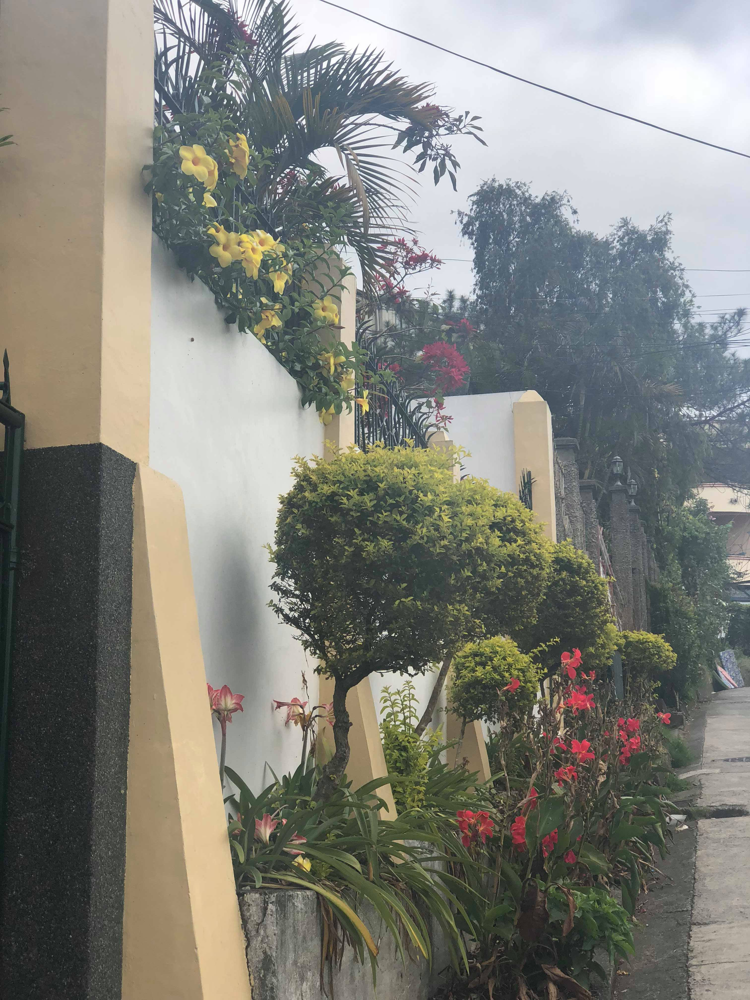

"A home away from home and full of friedly people."
 


In History,Human Race is Evolving and share their interest claiming that what they believe and experience is right.Therefore Human Rights was introduced,a norm and a guideline for the people.All of us have rights disregarding our gender,race,religious beliefs,culture and place that we have grown,nationality and the status of our life.
It is the freedom and privelege granted to us given to a nation or a country.Human Rights are govern by the Law and are approved by Officers in the Country.It is not a substance that can be grabbed ,also cannot be weighted and measured because people are given the same and equal rights for our existence. It is an important norm to all since it protects us from injustice and harm from outside sources.Organization such as "The Commission on Human Rights of the Philippines" maintain and ensure that Our rights shows integrity.This are Human rights that is commonly recognized:
First of All,Barangay Leonila Hill Promotes Equality and Unity throughtout the Community.The Barrio makes sure that all neighboring houses in the area is satisfied.Policies and rules are settled up to maintain the peace and order of the community,peace and order is a important advocacy for the barangay because it avoids a lot of human rights violations.Also the Barangay promotes a "Zero Crime Zone",reducing violence,destruction and disturbance to the area.The Barangay officials are friendly and approachable,They make sure that crimes and violence is abolished such as thiefs,shoplifters, riots,and more.Facilities and Infrastructure of the Barangay are open for the community for their personal enjoyment and time.
The barangay get hold of people responsible to their assigned committies such as Human Rights officer ensuring control and maintain peace to the people.
The Barangay never encounters problems regarding their human rights,because officials are willing to give their services,facilities and support for the needs of the community in Leonila Hill.the That is why the Barangay maintains a great reputation to other Barangays.